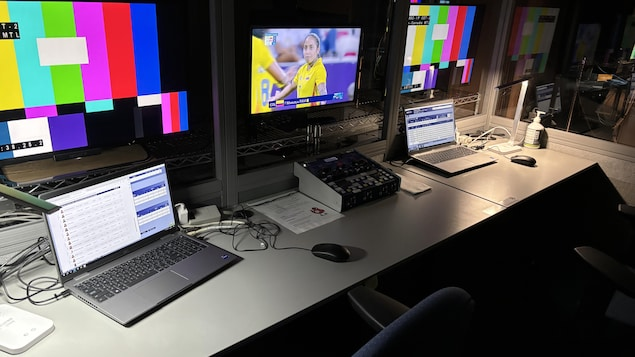
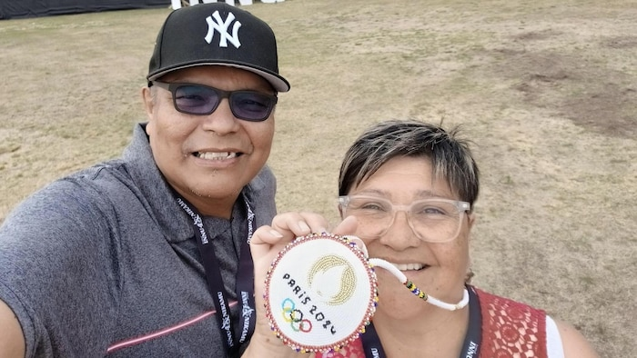
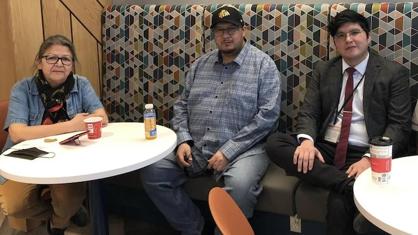

奥运会期间加拿大广播公司为阿提卡梅克语和因努语评论员提供的一个小型录音室。
照片：Mélanie Duquette
RCI
8月5至10日，加拿大广播公司的五名旁述员，将为三人篮球、滑板、皮划艇和摔跤的奥运赛事提供阿提卡梅克语（Atikamekw） 和因努语（Innu）两种原住民语的旁述。
来自佩萨米特因努社区（innus de Pessamit）的原住民电台记者多米尼克（Joyce Dominique），将会以因努艾蒙语（innu-aimun）评论比赛，她感到无比自豪。

（左起）马勒克（Gervais Malleck）和多米尼克（Joyce Dominique）在奥运期间，將以艾蒙语（innu-aimun）评论比赛。
照片：Joyce Dominique
多米尼克曾用因努语评论原住民的冰上曲棍球比赛和原住民远征比赛等。
自从2021年东京奥运会，加拿大广播公司就派评述员用克里语（Cree/Cris)描述开幕式和闭幕式。之后在2022年的北京冬奥上，也曾以克里语描述几场泳上曲棍球比赛。这次是第三次在奥运转播中使用原住民语言。
杜贝（Anthony Dubé）回忆说，他年轻时，加拿大广播公司是他所在的马纳万（Manawan）阿提卡梅克社区唯一能接收到的电视台。现在能用母语阿提卡梅克进行奥运广播，他的感受特别深。

左起：渥太华（Thérèse Ottawa）、杜贝（Anthony Dubé）和内卡多（Alexandre Nequado）是2024年奥运会期间三位阿提卡梅克语评论员。
照片：Marianne Situ
他和姨妈及表兄弟都参加了语言翻译培训，偶尔一起用阿提卡梅克语进行即时传译。
挑战传统原住民文化中没有的运动项目
要评论传统原住民文化中没有的运动项目，翻译本来没有的体育术语，岂是易事。评论员都须要接受训练并谘询社区长者。
像多米尼克就指，滑板比赛是她面临的最大挑战，但因努语永不会令她失望。
她记得以前听过一个动词，意思是踢板站起来。于是她去找马尼-图腾纳姆(Mani-utenam)的长老麦肯齐（Paul-Arthur Mckenzie），问他，当地上有一块木板，你不需要弯腰的时候，踢它就能把它踢起来，这个词怎么说？
长老直接告诉她答案。
另一名旁述员渥太华（ Thérèse Ottawa）解释说，原住民语言是描述性语言，为了做好旁述准备，她们已编写了一个小小的词汇表。
渥太华的儿子内卡多（Alexandre Nequado）同样担任旁述员，住在蒙特利尔的他说，15岁后就没有在自己的社区生活过。
虽然他一直在说母语，但承认法语比母语好。因此他希望提倡原住民年轻人用阿提卡梅克语工作、创作内容，从而创造出一个原住民语言的生态系统。
除了因努艾蒙语和阿提卡梅克语，加拿大广播公司北部地区的瓦帕切（Cheryl Wapachee）、吉蒂（Marjorie Kitty）、瓦帕切（Celina Wapachee）和斯图尔特（Dorothy Stewart）亦会以克里语进行评述。
Shushan Bacon de Radio-Canada, adaptation en chinois par Donna Chan.
比赛日程（多伦多时间）
8 月 5 日 三人篮球：3:00 – 5:20pm
8 月 6 日 滑板：6:00 – 10:00am，11:30am – 1:00pm
8 月 7 日 滑板：6:00 – 10:00am，11:30am – 1:00pm
8 月 8 日 划独木舟：4:30-8:30am
8 月 9 日 划独木舟：4:30-8:30am
8 月 10 日 摔跤：5:00-7:30am，12:15 – 3:45pm
在 ICI TOU.TV（新窗口）、加拿大广播公司奥运转播网站（新窗口）、移动应用程序：Radio-Canada JO Paris 2024 和 CBC GEM（新窗口） 都可以看到因努艾蒙语和阿提卡梅克语评述的赛事。
文章来源于RCI:两种原住民语言首次用作旁述奥运